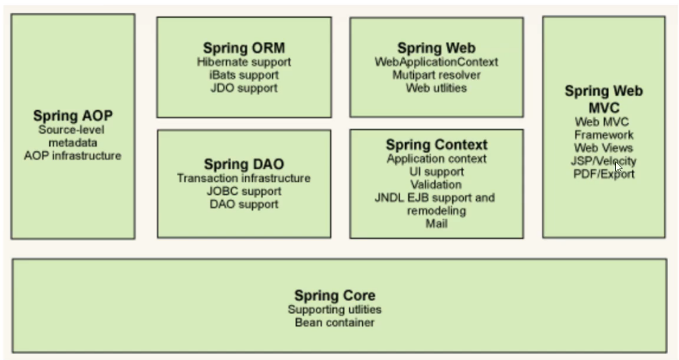

Spring 简介
1 2 3 4 5 6 7 <dependency > <groupId > org.springframework</groupId > <artifactId > spring-webmvc</artifactId > <version > 5.3.9</version > </dependency >
优点
开源免费框架
非入侵式，轻量级
控制反转（IOC），面向切面编程（AOP） 支持事务的处理，对框架整合的支持
组成 
拓展 Spring Boot
一个快速开发的脚手架
基于Spring Boot可以快速开发单个微服务
约定大于配置
SpringCloud
Spring Cloud是基于Spring Boot实现的
大部分公司都在使用Spring Boot开发，Spring和Spring MVC是学习的前提
IOC ioc原型（控制反转） 利用set实现动态值注入，发生了革命性变化
1 2 3 4 5 public void setUserDao (UserDao userDao) { this .userDao = userDao; } }
控制反转是一种通过描述（XML或注解）并通过第三方去生产或获取特定对象的方式。在Spring中实现控制反转的是IOC容器，其实现方法是依赖注入。
Hello Spring 结构如图
Hello.java 1 2 3 4 5 6 7 8 9 10 11 12 13 14 15 16 17 18 19 20 21 package top.huii.pojo;public class Hello { private String str; public String getStr () { return str; } public void setStr (String str) { this .str = str; } @Override public String toString () { return "Hello{" + "str='" + str + '\'' + '}' ; } }
配置文件beans.xml(可使用IDEA生成模板)
1 2 3 4 5 6 7 8 9 10 11 12 <?xml version="1.0" encoding="UTF-8" ?> <beans xmlns ="http://www.springframework.org/schema/beans" xmlns:xsi ="http://www.w3.org/2001/XMLSchema-instance" xsi:schemaLocation ="http://www.springframework.org/schema/beans http://www.springframework.org/schema/beans/spring-beans.xsd" > <bean id ="Hello" class ="top.huii.pojo.Hello" > <property name ="str" value ="Spring" /> </bean > </beans >
测试文件MyTest.java 1 2 3 4 5 6 7 8 9 10 11 12 import org.springframework.context.ApplicationContext;import org.springframework.context.support.ClassPathXmlApplicationContext;import top.huii.pojo.Hello;public class MyTest { public static void main (String[] args) { ApplicationContext context = new ClassPathXmlApplicationContext ("beans.xml" ); Hello hello = (Hello) context.getBean("Hello" ); System.out.println(hello.toString()); } }
IOC创建对象的方法 1 使用无参构造创建对象。默认 2 有参构造 ①下标赋值 1 2 3 4 <bean id ="exampleBean" class ="examples.ExampleBean" > <constructor-arg index ="0" value ="7500000" /> <constructor-arg index ="1" value ="42" /> </bean >
② 参数类型匹配(不建议使用) 1 2 3 4 <bean id ="exampleBean" class ="examples.ExampleBean" > <constructor-arg type ="int" value ="7500000" /> <constructor-arg type ="java.lang.String" value ="42" /> </bean >
③通过参数名设置 1 2 3 4 <bean id ="exampleBean" class ="examples.ExampleBean" > <constructor-arg name ="years" value ="7500000" /> <constructor-arg name ="ultimateAnswer" value ="42" /> </bean >
Spring配置 别名 1 <alias name ="fromName" alias ="toName" />
Bean配置 1 2 3 <bean id ="exampleBean" class ="examples.ExampleBean" name ="user user2,user3;user4" > <property name ="integerProperty" value ="1" /> </bean >
import ApplicationContext.xml
1 2 3 4 5 6 7 8 <beans > <import resource ="services.xml" /> <import resource ="resources/messageSource.xml" /> <import resource ="/resources/themeSource.xml" /> <bean id ="bean1" class ="..." /> <bean id ="bean2" class ="..." /> </beans >
依赖注入 构造器注入 上面已经说过
set方式注入（*） 依赖 bean的创建依赖于容器
注入 bean对象中的所有属性，由容器来注入
代码 Address.java
1 2 3 4 5 6 7 8 9 10 11 12 13 14 15 16 17 18 19 20 package top.huii.pojo;public class Address { private String address; public String getAddress () { return address; } public void setAddress (String address) { this .address = address; } @Override public String toString () { return "Address{" + "address='" + address + '\'' + '}' ; } }
Student.java
1 2 3 4 5 6 7 8 9 10 11 12 13 14 15 16 17 18 19 20 21 22 23 24 25 26 27 28 29 30 31 32 33 34 35 36 37 38 39 40 41 42 43 44 45 46 47 48 49 50 51 52 53 54 55 56 57 58 59 60 61 62 63 64 65 66 67 68 69 70 71 72 73 74 75 76 77 78 79 80 81 82 83 84 85 86 87 88 89 90 91 92 93 94 package top.huii.pojo;import java.util.*;public class Student { private String name; private Address address; private String[] books; private List<String> hobbies; private Map<String, String> card; private Set<String> games; private String wife; private Properties info; public String getName () { return name; } public void setName (String name) { this .name = name; } public Address getAddress () { return address; } public void setAddress (Address address) { this .address = address; } public String[] getBooks() { return books; } public void setBooks (String[] books) { this .books = books; } public List<String> getHobbies () { return hobbies; } public void setHobbies (List<String> hobbies) { this .hobbies = hobbies; } public Map<String, String> getCard () { return card; } public void setCard (Map<String, String> card) { this .card = card; } public Set<String> getGames () { return games; } public void setGames (Set<String> games) { this .games = games; } public String getWife () { return wife; } public void setWife (String wife) { this .wife = wife; } public Properties getInfo () { return info; } public void setInfo (Properties info) { this .info = info; } @Override public String toString () { return "Student{" + "name='" + name + '\'' + ", address=" + address.toString() + ", books=" + Arrays.toString(books) + ", hobbies=" + hobbies + ", card=" + card + ", games=" + games + ", wife='" + wife + '\'' + ", info=" + info + '}' ; } }
beans.xml
1 2 3 4 5 6 7 8 9 10 11 12 13 14 15 16 17 18 19 20 21 22 23 24 25 26 27 28 29 30 31 32 33 34 35 36 37 38 39 40 41 42 43 44 45 46 47 48 49 50 51 52 53 54 <?xml version="1.0" encoding="UTF-8" ?> <beans xmlns ="http://www.springframework.org/schema/beans" xmlns:xsi ="http://www.w3.org/2001/XMLSchema-instance" xsi:schemaLocation ="http://www.springframework.org/schema/beans http://www.springframework.org/schema/beans/spring-beans.xsd" > <bean id ="address" class ="top.huii.pojo.Address" > <property name ="address" value ="合肥" /> </bean > <bean id ="student" class ="top.huii.pojo.Student" > <property name ="name" value ="HUII" /> <property name ="address" ref ="address" /> <property name ="books" > <array > <value > 红楼梦</value > <value > 西游记</value > <value > 水浒传</value > <value > 三国演义</value > </array > </property > <property name ="hobbies" > <list > <value > 听歌</value > <value > 代码</value > </list > </property > <property name ="card" > <map > <entry key ="身份证" value ="11111111111111111111111" /> </map > </property > <property name ="games" > <set > <value > LOL</value > <value > qqfc</value > </set > </property > <property name ="wife" > <null /> </property > <property name ="info" > <props > <prop key ="学号" > 2019210001</prop > <prop key ="国籍" > 中国</prop > </props > </property > </bean > </beans >
MyTest.java
1 2 3 4 5 6 7 8 9 10 11 12 import org.springframework.context.ApplicationContext;import org.springframework.context.support.ClassPathXmlApplicationContext;import top.huii.pojo.Student;public class MyTest { public static void main (String[] args) { ApplicationContext context = new ClassPathXmlApplicationContext ("beans.xml" ); Student student = (Student) context.getBean("student" ); System.out.println(student.toString()); } }
扩展方式 p命名空间 user.java
1 2 3 4 5 6 7 8 9 10 11 12 13 14 15 16 17 18 19 20 21 22 23 24 25 26 27 28 29 30 31 32 33 34 35 36 37 38 package top.huii.pojo;public class User { private String name; private int age; public User () { } public User (String name, int age) { this .name = name; this .age = age; } public String getName () { return name; } public void setName (String name) { this .name = name; } public int getAge () { return age; } public void setAge (int age) { this .age = age; } @Override public String toString () { return "User{" + "name='" + name + '\'' + ", age=" + age + '}' ; } }
userbeans.xml
1 2 3 4 5 6 7 8 <?xml version="1.0" encoding="UTF-8" ?> <beans xmlns ="http://www.springframework.org/schema/beans" xmlns:xsi ="http://www.w3.org/2001/XMLSchema-instance" xmlns:p ="http://www.springframework.org/schema/p" xsi:schemaLocation ="http://www.springframework.org/schema/beans http://www.springframework.org/schema/beans/spring-beans.xsd" > <bean id ="user" class ="top.huii.pojo.User" p:age ="18" p:name ="HUII" /> </beans >
测试
1 2 3 4 5 6 7 8 public class MyTest { @Test public void test2 () { ApplicationContext context = new ClassPathXmlApplicationContext ("userbeans.xml" ); User user = (User) context.getBean("user" ); System.out.println(user); } }
c命名空间 1 2 3 4 5 6 7 8 <?xml version="1.0" encoding="UTF-8" ?> <beans xmlns ="http://www.springframework.org/schema/beans" xmlns:xsi ="http://www.w3.org/2001/XMLSchema-instance" xmlns:c ="http://www.springframework.org/schema/c" xsi:schemaLocation ="http://www.springframework.org/schema/beans http://www.springframework.org/schema/beans/spring-beans.xsd" > <bean id ="user2" class ="top.huii.pojo.User" c:age ="19" c:name ="huii" /> </beans >
bean的作用域 单例模式（默认） 只有一个对象
1 2 3 4 <bean id ="accountService" class ="com.foo.DefaultAccountService" /> <bean id ="accountService" class ="com.foo.DefaultAccountService" scope ="singleton" />
原型模式 每次从容器中get的时候，都会产生一个新对象
1 <bean id ="accountService" class ="com.foo.DefaultAccountService" scope ="prototype" />
其他 request，session，application只能在web开发中使用
Bean的自动装配 自动寻找并装配属性
配置的三种方式
xml中显式配置
java中显式配置
隐式自动装配bean（*）
准备代码 cat.java
1 2 3 4 5 6 7 package top.huii.pojo;public class Cat { public void shout () { System.out.println("miao" ); } }
dog.java
1 2 3 4 5 6 7 package top.huii.pojo;public class Dog { public void shout () { System.out.println("wang" ); } }
people.java
1 2 3 4 5 6 7 8 9 10 11 12 13 14 15 16 17 18 19 20 21 22 23 24 25 26 27 28 29 30 31 32 33 34 35 36 37 38 39 40 package top.huii.pojo;public class People { private Cat cat; private Dog dog; private String name; public Cat getCat () { return cat; } public void setCat (Cat cat) { this .cat = cat; } public Dog getDog () { return dog; } public void setDog (Dog dog) { this .dog = dog; } public String getName () { return name; } public void setName (String name) { this .name = name; } @Override public String toString () { return "People{" + "cat=" + cat + ", dog=" + dog + ", name='" + name + '\'' + '}' ; } }
测试
1 2 3 4 5 6 7 8 9 10 11 12 13 14 import org.junit.Test;import org.springframework.context.ApplicationContext;import org.springframework.context.support.ClassPathXmlApplicationContext;import top.huii.pojo.People;public class MyTest { @Test public void test1 () { ApplicationContext context = new ClassPathXmlApplicationContext ("beans.xml" ); People people = context.getBean("people" , People.class); people.getCat().shout(); people.getDog().shout(); } }
byName自动装配 1 2 3 4 5 6 7 8 9 10 11 12 13 <?xml version="1.0" encoding="UTF-8" ?> <beans xmlns ="http://www.springframework.org/schema/beans" xmlns:xsi ="http://www.w3.org/2001/XMLSchema-instance" xsi:schemaLocation ="http://www.springframework.org/schema/beans http://www.springframework.org/schema/beans/spring-beans.xsd" > <bean id ="cat" class ="top.huii.pojo.Cat" /> <bean id ="dog" class ="top.huii.pojo.Dog" /> <bean id ="people" class ="top.huii.pojo.People" autowire ="byName" > <property name ="name" value ="HUII" /> </bean > </beans >
需要保证所有的bean的id唯一，且这个bean需要和自动注入的属性的set方法的值一致。
byType自动装配 1 2 3 4 5 6 7 8 9 10 11 12 13 <?xml version="1.0" encoding="UTF-8" ?> <beans xmlns ="http://www.springframework.org/schema/beans" xmlns:xsi ="http://www.w3.org/2001/XMLSchema-instance" xsi:schemaLocation ="http://www.springframework.org/schema/beans http://www.springframework.org/schema/beans/spring-beans.xsd" > <bean id ="cat" class ="top.huii.pojo.Cat" /> <bean id ="dog" class ="top.huii.pojo.Dog" /> <bean id ="people" class ="top.huii.pojo.People" autowire ="byType" > <property name ="name" value ="HUII" /> </bean > </beans >
byType甚至可以省略id
1 2 3 4 5 6 7 8 9 10 11 12 13 14 <?xml version="1.0" encoding="UTF-8" ?> <beans xmlns ="http://www.springframework.org/schema/beans" xmlns:xsi ="http://www.w3.org/2001/XMLSchema-instance" xsi:schemaLocation ="http://www.springframework.org/schema/beans http://www.springframework.org/schema/beans/spring-beans.xsd" > <bean class ="top.huii.pojo.Cat" /> <bean class ="top.huii.pojo.Dog" /> <bean id ="people" class ="top.huii.pojo.People" autowire ="byType" > <property name ="name" value ="HUII" /> </bean > </beans >
需要保证所有的bean的class唯一，且这个bean需要和自动注入的属性的类型一致。
使用注解实现自动装配
1 2 3 4 5 6 7 8 9 10 11 12 13 <?xml version="1.0" encoding="UTF-8" ?> <beans xmlns ="http://www.springframework.org/schema/beans" xmlns:xsi ="http://www.w3.org/2001/XMLSchema-instance" xmlns:context ="http://www.springframework.org/schema/context" xsi:schemaLocation ="http://www.springframework.org/schema/beans http://www.springframework.org/schema/beans/spring-beans.xsd http://www.springframework.org/schema/context http://www.springframework.org/schema/context/spring-context.xsd" > <context:annotation-config /> <bean class ="top.huii.pojo.Cat" /> <bean class ="top.huii.pojo.Dog" /> <bean id ="people" class ="top.huii.pojo.People" /> </beans >
可以省去很多配置，甚至set可以省去
People.java
1 2 3 4 5 6 7 8 9 10 11 12 13 14 15 16 17 18 19 20 21 22 23 24 25 26 27 28 29 30 31 32 package top.huii.pojo;import org.springframework.beans.factory.annotation.Autowired;public class People { @Autowired private Cat cat; @Autowired private Dog dog; private String name; public Cat getCat () { return cat; } public Dog getDog () { return dog; } public String getName () { return name; } @Override public String toString () { return "People{" + "cat=" + cat + ", dog=" + dog + ", name='" + name + '\'' + '}' ; } }
1 2 3 4 5 6 7 8 9 10 11 ```@Nullable```表明字段可为空 ```java public class SimpleMovieLister { @Inject public void setMovieFinder(@Nullable MovieFinder movieFinder) { ... } }
1 2 3 4 5 6 7 8 9 10 11 12 13 ```@Resource``` ```java public class SimpleMovieLister { private MovieFinder movieFinder; @Resource(name="myMovieFinder") public void setMovieFinder(MovieFinder movieFinder) { this.movieFinder = movieFinder; } }
使用注解开发 使用注解需要导入context约束，增加注解的支持
1 2 3 4 5 6 7 8 9 10 11 12 <?xml version="1.0" encoding="UTF-8" ?> <beans xmlns ="http://www.springframework.org/schema/beans" xmlns:xsi ="http://www.w3.org/2001/XMLSchema-instance" xmlns:context ="http://www.springframework.org/schema/context" xsi:schemaLocation ="http://www.springframework.org/schema/beans http://www.springframework.org/schema/beans/spring-beans.xsd http://www.springframework.org/schema/context http://www.springframework.org/schema/context/spring-context.xsd" > <context:annotation-config /> </beans >
使用@Component 配置文件
1 2 3 4 5 6 7 8 9 10 11 12 13 <?xml version="1.0" encoding="UTF-8" ?> <beans xmlns ="http://www.springframework.org/schema/beans" xmlns:xsi ="http://www.w3.org/2001/XMLSchema-instance" xmlns:context ="http://www.springframework.org/schema/context" xsi:schemaLocation ="http://www.springframework.org/schema/beans http://www.springframework.org/schema/beans/spring-beans.xsd http://www.springframework.org/schema/context http://www.springframework.org/schema/context/spring-context.xsd" > <context:component-scan base-package ="top.huii.dao" /> <context:annotation-config /> </beans >
User.java
1 2 3 4 5 6 7 8 9 package top.huii.dao;import org.springframework.stereotype.Component;@Component public class User { public String name = "HUII" ; }
@Value属性注入 1 2 3 4 5 6 @Component public class User { @Value("HUII") public String name = "HUII" ; }
衍生注解 @Component有几个衍生注释
UserDao.java
1 2 3 4 5 6 7 package top.huii.dao;import org.springframework.stereotype.Repository;@Repository public class UserDao {}
UserService
1 2 3 4 5 6 7 package top.huii.service;import org.springframework.stereotype.Service;@Service public class UserService {}
UserControl.java
1 2 3 4 5 6 7 package top.huii.controller;import org.springframework.stereotype.Controller;@Controller public class UserControl {}
配置文件
1 2 3 4 5 6 7 8 9 10 11 12 13 <?xml version="1.0" encoding="UTF-8" ?> <beans xmlns ="http://www.springframework.org/schema/beans" xmlns:xsi ="http://www.w3.org/2001/XMLSchema-instance" xmlns:context ="http://www.springframework.org/schema/context" xsi:schemaLocation ="http://www.springframework.org/schema/beans http://www.springframework.org/schema/beans/spring-beans.xsd http://www.springframework.org/schema/context http://www.springframework.org/schema/context/spring-context.xsd" > <context:component-scan base-package ="top.huii" /> <context:annotation-config /> </beans >
几个功能都表示将某个类注册到Spring中
作用域@Scope 1 2 3 4 5 6 7 8 @Component public class FactoryMethodComponent { @Bean @Scope("prototype") public TestBean prototypeInstance (InjectionPoint injectionPoint) { return new TestBean ("prototypeInstance for " + injectionPoint.getMember()); } }
小结
xml更万能，适合任何场合，维护方便
注解不是自己类使用不了，维护复杂
使用Java的方式配置spring JavaConfig
User.java
1 2 3 4 5 6 7 8 9 10 11 12 13 14 15 16 17 18 19 20 21 22 23 24 25 package top.huii.pojo;import org.springframework.beans.factory.annotation.Value;import org.springframework.stereotype.Component;@Component public class User { private String name; public String getName () { return name; } @Value("HUII") public void setName (String name) { this .name = name; } @Override public String toString () { return "User{" + "name='" + name + '\'' + '}' ; } }
配置文件MyConfig.java
1 2 3 4 5 6 7 8 9 10 11 12 13 14 15 package top.huii.config;import org.springframework.context.annotation.Bean;import org.springframework.context.annotation.Configuration;import top.huii.pojo.User;@Configuration public class MyConfig { @Bean public User getUser () { return new User (); } }
MyTest.java
1 2 3 4 5 6 7 8 9 10 11 12 import org.springframework.context.ApplicationContext;import org.springframework.context.annotation.AnnotationConfigApplicationContext;import top.huii.config.MyConfig;import top.huii.pojo.User;public class MyTest { public static void main (String[] args) { ApplicationContext context = new AnnotationConfigApplicationContext (MyConfig.class); User getUser = (User) context.getBean("getUser" ); System.out.println(getUser.getName()); } }
这种纯java配置的方法在SpringBoot中随处可见
代理模式 静态代理 Rent.java
1 2 3 4 5 package top.huii.demo1;public interface Rent { public void rent () ; }
Host.java
1 2 3 4 5 6 7 package top.huii.demo1;public class Host implements Rent { public void rent () { System.out.println("房东要出租房子" ); } }
Proxy.java
1 2 3 4 5 6 7 8 9 10 11 12 13 14 15 16 17 18 19 20 21 22 23 24 25 package top.huii.demo1;public class Proxy implements Rent { private Host host; public Proxy () { } public Proxy (Host host) { this .host = host; } public void rent () { seeHouse(); host.rent(); heTong(); } public void seeHouse () { System.out.println("看房" ); } public void heTong () { System.out.println("签合同" ); } }
Client.java
1 2 3 4 5 6 7 8 9 package top.huii.demo1;public class Client { public static void main (String[] args) { Host host = new Host (); Proxy proxy = new Proxy (host); proxy.rent(); } }
优点
使真实角色的操作更纯粹，不用去关心一些公共事务
公共事务交给代理角色，实现了业务的分工
公共业务发生拓展是方便集中管理
缺点
一个真实角色就会产生一个代理角色，代码量翻倍，开发效率降低
动态代理
动态代理与静态代理角色一样
动态代理的代理类是动态生成的，不是我们直接写好的
动态代理分为两大类：①基于接口——基于JDK ②基于类cglib
需要理解两个类：Proxy和InvocationHandler
ProxyInvocationHandler.java
1 2 3 4 5 6 7 8 9 10 11 12 13 14 15 16 17 18 19 20 21 22 23 24 25 26 27 28 29 30 package top.huii.demo2;import java.lang.reflect.InvocationHandler;import java.lang.reflect.Method;import java.lang.reflect.Proxy;public class ProxyInvocationHandler implements InvocationHandler { private Object target; public void setTarget (Object target) { this .target = target; } public Object getProxy () { return Proxy.newProxyInstance(this .getClass().getClassLoader(), target.getClass().getInterfaces(), this ); } public Object invoke (Object proxy, Method method, Object[] args) throws Throwable{ Object result = method.invoke(target, args); return result; } }
优点：一个动态代理类可代理同一类业务
AOP 面向切面编程
依赖包
1 2 3 4 5 6 7 <dependency > <groupId > org.aspectj</groupId > <artifactId > aspectjweaver</artifactId > <version > 1.9.7</version > <scope > runtime</scope > </dependency >
使用原生Spring API实现
UserService.java
1 2 3 4 5 6 7 8 package top.huii.service;public interface UserService { public void add () ; public void delete () ; public void update () ; public void select () ; }
UserServiceImpl.java
1 2 3 4 5 6 7 8 9 10 11 12 13 14 15 16 17 18 19 package top.huii.service;public class UserServiceImpl implements UserService { public void add () { System.out.println("增加一个用户" ); } public void delete () { System.out.println("删除一个用户" ); } public void update () { System.out.println("修改一个用户" ); } public void select () { System.out.println("查询一个用户" ); } }
Log.java
1 2 3 4 5 6 7 8 9 10 11 12 13 package top.huii.log;import org.springframework.aop.MethodBeforeAdvice;import java.lang.reflect.Method;public class Log implements MethodBeforeAdvice { public void before (Method method, Object[] objects, Object o) throws Throwable { System.out.println(o.getClass().getName()+"的" +method.getName()+"被执行了" ); } }
AfterLog.java
1 2 3 4 5 6 7 8 9 10 11 package top.huii.log;import org.springframework.aop.AfterReturningAdvice;import java.lang.reflect.Method;public class AfterLog implements AfterReturningAdvice { public void afterReturning (Object o, Method method, Object[] objects, Object o1) throws Throwable { System.out.println("执行了" +method.getName()+"返回结果为" +o); } }
配置文件
1 2 3 4 5 6 7 8 9 10 11 12 13 14 15 16 17 18 19 20 21 22 23 <?xml version="1.0" encoding="UTF-8" ?> <beans xmlns ="http://www.springframework.org/schema/beans" xmlns:xsi ="http://www.w3.org/2001/XMLSchema-instance" xmlns:aop ="http://www.springframework.org/schema/aop" xsi:schemaLocation ="http://www.springframework.org/schema/beans http://www.springframework.org/schema/beans/spring-beans.xsd http://www.springframework.org/schema/aop http://www.springframework.org/schema/aop/spring-aop.xsd" > <bean id ="userService" class ="top.huii.service.UserServiceImpl" /> <bean id ="log" class ="top.huii.log.Log" /> <bean id ="afterLog" class ="top.huii.log.AfterLog" /> <aop:config > <aop:pointcut id ="pointcut" expression ="execution(* top.huii.service.UserServiceImpl.*(..))" /> <aop:advisor advice-ref ="log" pointcut-ref ="pointcut" /> <aop:advisor advice-ref ="afterLog" pointcut-ref ="pointcut" /> </aop:config > </beans >
测试文件
1 2 3 4 5 6 7 8 9 10 11 import org.springframework.context.ApplicationContext;import org.springframework.context.support.ClassPathXmlApplicationContext;import top.huii.service.UserService;public class MyTest { public static void main (String[] args) { ApplicationContext context = new ClassPathXmlApplicationContext ("applicationContext.xml" ); UserService userService = context.getBean("userService" , UserService.class); userService.add(); } }
自定义类 DiyPointCut.java
1 2 3 4 5 6 7 8 9 10 11 package top.huii.diy;public class DiyPointCut { public void before () { System.out.println("=====方法执行前=====" ); } public void after () { System.out.println("=====方法执行后=====" ); } }
配置文件
1 2 3 4 5 6 7 8 9 10 11 12 13 14 15 16 17 18 19 20 21 22 23 <?xml version="1.0" encoding="UTF-8" ?> <beans xmlns ="http://www.springframework.org/schema/beans" xmlns:xsi ="http://www.w3.org/2001/XMLSchema-instance" xmlns:aop ="http://www.springframework.org/schema/aop" xsi:schemaLocation ="http://www.springframework.org/schema/beans http://www.springframework.org/schema/beans/spring-beans.xsd http://www.springframework.org/schema/aop http://www.springframework.org/schema/aop/spring-aop.xsd" > <bean id ="userService" class ="top.huii.service.UserServiceImpl" /> <bean id ="log" class ="top.huii.log.Log" /> <bean id ="afterLog" class ="top.huii.log.AfterLog" /> <bean id ="diy" class ="top.huii.diy.DiyPointCut" /> <aop:config > <aop:aspect ref ="diy" > <aop:pointcut id ="point" expression ="execution(* top.huii.service.UserServiceImpl.*(..))" /> <aop:before method ="before" pointcut-ref ="point" /> <aop:after method ="after" pointcut-ref ="point" /> </aop:aspect > </aop:config > </beans >
注解实现 AnnotationPointCut.java
1 2 3 4 5 6 7 8 9 10 11 12 package top.huii.diy;import org.aspectj.lang.annotation.Aspect;import org.aspectj.lang.annotation.Before;@Aspect public class AnnotationPointCut { @Before("execution(* top.huii.service.UserServiceImpl.*(..))") public void before () { System.out.println("=====方法执行前=====" ); } }
配置文件
1 2 3 4 5 6 7 8 9 10 11 12 13 14 15 16 <?xml version="1.0" encoding="UTF-8" ?> <beans xmlns ="http://www.springframework.org/schema/beans" xmlns:xsi ="http://www.w3.org/2001/XMLSchema-instance" xmlns:aop ="http://www.springframework.org/schema/aop" xsi:schemaLocation ="http://www.springframework.org/schema/beans http://www.springframework.org/schema/beans/spring-beans.xsd http://www.springframework.org/schema/aop http://www.springframework.org/schema/aop/spring-aop.xsd" > <bean id ="userService" class ="top.huii.service.UserServiceImpl" /> <bean id ="log" class ="top.huii.log.Log" /> <bean id ="afterLog" class ="top.huii.log.AfterLog" /> <bean id ="annotationPointCut" class ="top.huii.diy.AnnotationPointCut" /> <aop:aspectj-autoproxy /> </beans >
整合Mybatis 基本环境搭建 pom.xml
1 2 3 4 5 6 7 8 9 10 11 12 13 14 15 16 17 18 19 20 21 22 23 24 25 26 27 28 29 30 31 32 33 34 35 36 37 38 39 40 41 42 43 44 45 46 47 48 49 50 51 52 53 54 55 56 57 58 59 60 61 <?xml version="1.0" encoding="UTF-8" ?> <project xmlns ="http://maven.apache.org/POM/4.0.0" xmlns:xsi ="http://www.w3.org/2001/XMLSchema-instance" xsi:schemaLocation ="http://maven.apache.org/POM/4.0.0 http://maven.apache.org/xsd/maven-4.0.0.xsd" > <parent > <artifactId > learn_spring1</artifactId > <groupId > top.huii</groupId > <version > 1.0-SNAPSHOT</version > </parent > <modelVersion > 4.0.0</modelVersion > <artifactId > Mybatis-spr</artifactId > <properties > <maven.compiler.source > 8</maven.compiler.source > <maven.compiler.target > 8</maven.compiler.target > </properties > <dependencies > <dependency > <groupId > junit</groupId > <artifactId > junit</artifactId > <version > 4.13</version > </dependency > <dependency > <groupId > mysql</groupId > <artifactId > mysql-connector-java</artifactId > <version > 5.1.49</version > </dependency > <dependency > <groupId > org.mybatis</groupId > <artifactId > mybatis</artifactId > <version > 3.5.2</version > </dependency > <dependency > <groupId > org.springframework</groupId > <artifactId > spring-webmvc</artifactId > <version > 5.3.9</version > </dependency > <dependency > <groupId > org.springframework</groupId > <artifactId > spring-jdbc</artifactId > <version > 5.3.9</version > </dependency > <dependency > <groupId > org.aspectj</groupId > <artifactId > aspectjweaver</artifactId > <version > 1.9.7</version > </dependency > <dependency > <groupId > org.mybatis</groupId > <artifactId > mybatis-spring</artifactId > <version > 2.0.6</version > </dependency > <dependency > <groupId > org.projectlombok</groupId > <artifactId > lombok</artifactId > <version > 1.18.20</version > </dependency > </dependencies > </project >
Mybatis 参考之前的
MyBatis-Spring 方式一 出问题了。。。
声明式事务 确保完整性和一致性
事务的ACID原则
。。。
【完】